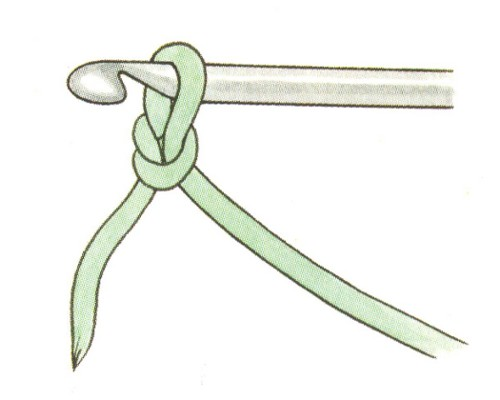
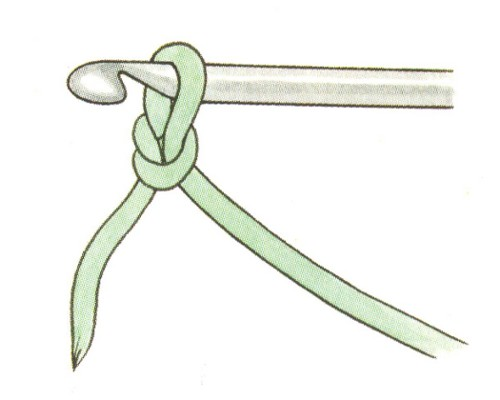

Основные приемы вязания крчюком
Основные приемы
вязания крючком.
Воздушная
петля
– является основой всего процесса вязания крючком, также она зачастую
используется в самых разнообразных узорах.
Как связать
начальную петлю.
Прежде чем приступить к
вязанию и набору петель, нам нужно сделать начальную петлю, а точнее узел.
1. Складываем нить петлей, накидываем эту петлю на крючок так, чтобы
рабочая нить была на указательном пальце, при этом хвост нити придерживаем
большим и средним пальцами крючком захватываем нить и протягиваем ее через эту
петлю, затягиваем узел.
2. Крючок будет внутри петли. Так мы связали
начальную петлю.
 

Как связать воздушные петли.
Для получения последующих петель, выполняем те же действия.
·
1. Захватываем крючком рабочую нить и протягиваем ее через воздушную
петлю.
Так у нас образуется цепочка, ее вяжут такой длины,
которая требуется для получения нужной нам ширины изделия. Цепочка из воздушных
петель образует основу для вязания первого ряда, но она не считается за ряд.
Цепочку из воздушных петель нужно вязать свободно, петли не
затягивать.


Столбик без накида.
Вяжем цепочку из воздушных петель.
Число воздушных петель должно быть
равно числу столбиков без накида плюс 1 петля для подъема.
Итак, цепочка
готова, вводим крючок во вторую от крючка петлю цепочки (столбику без накида
соответствует 1 петля подъема), захватываем нить и вытягиваем новую петлю, снова
захватываем нить и провязываем 2 петли на крючке в один прием.

Полустолбик
с накидом.
Как обычно, начинают вязание с начальной цепочки воздушных петель. Первый
столбик вяжут в третью от крючка петлю (2 петли подъема).
·
Сделать
накид.
·
Ввести
крючок в петлю предыдущего ряда, захватить рабочую нить и протянуть ее через
петлю. Теперь на крючке 3 петли.
·
Далее
подхватить крючком нить и протянуть ее через все три находящиеся на крючке
петли. Именно в этом заключается отличие вязания полустолбиков с
накидом.

Столбик
с одним накидом
Для вязания полотна столбиками с одним накидом вывязывают 2 петли подъема:
первый столбик вяжут в 3-ю петлю косички из воздушных петель.
·
Сделать
накид.
·
Ввести
крючок в петлю, захватить рабочую нить и вытянуть петлю. На крючке должно быть 4
петли.
·
Подхватить
рабочую нить и протянуть ее через две первые петли. На крючке 3 петли.
·
Еще
раз подхватить рабочую нить и протянуть ее через две следующие петли. На крючке
2 петли.
·
Снова
подхватить рабочую нить и протянуть ее через две последние петли. На крючке
снова находится всего одна петля.

Пико.
Делаем три воздушных петли, вводим крючок в первую и провязываем
столбиком
без накида.

Соединительный столбик.
Вводим крючок в петлю цепочки, захватываем нить и
протягиваем ее через петлю цепочки и петлю на крючке.

Если схемы взания являются недостаточно понятными, то предлагаем видео по теме основные приемы вязания крючком: